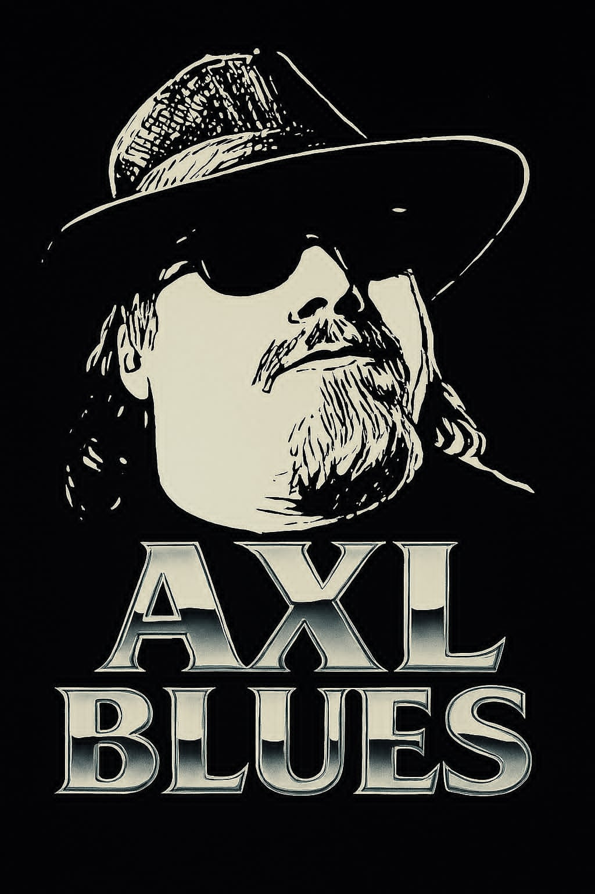

Honing the Act
Axl Blues — Harmonica player, vocalist, performer
Axl Blues is a harmonica player, vocalist, and performer whose journey into the blues began in 1997, jamming scales on guitar. Inspired by The Blues Brothers in 2002, he brought his act to karaoke stages in Seattle, developing his persona and passion for live performance. In 2015, he met Dan Aykroyd and committed fully to the blues, adding harmonica to his repertoire and shaping his identity as a modern bluesman.
Performing across the USA, Axl has shared stages and even microphones with legendary musicians including Bobby Rush and Charlie Musselwhite, as well as Bonnie Raitt’s former guitarist, Little Richard’s late-career guitarist, and Percy Sledge’s son. His performances have spanned festivals, blues jams, and venues nationwide.
In 2025, Axl legally adopted his stage name, solidifying his identity as a blues artist dedicated to carrying forward the spirit of the music that first captured him back in 1997.